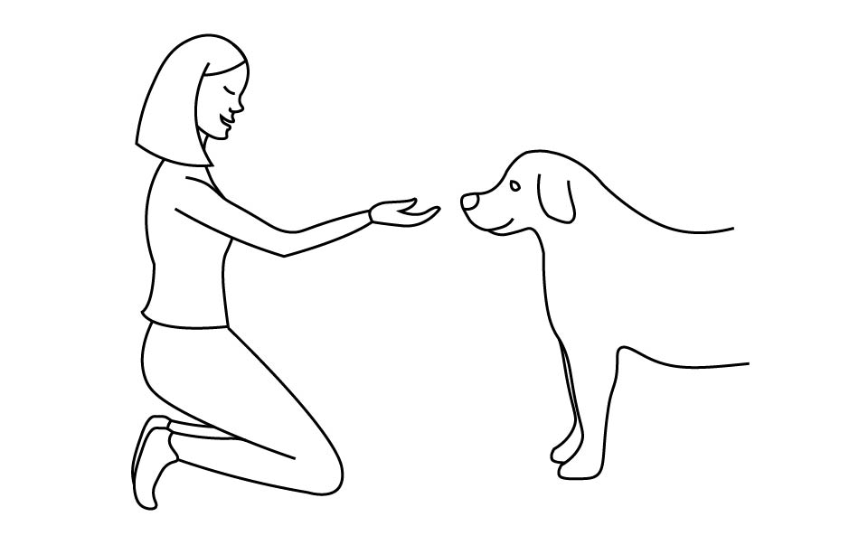

Adopt or buy a pet?
by Katarzyna Laniecka
Almost everyone wants to own a pet at some point in their life. They bring joy and company to our day. They are like children to us – they cause trouble, we spend way too much money on them, but in the end of the day we still love them just the way they are. Of course you can’t choose what your child is going to look like, but when it comes to getting a pet you have a wide range of choices.
A woman meeting her pet for the first time
(Credit: Katarzyna Laniecka)
A new pet
This is the most common scenario: Let’s say you want to have a new dog. You consider if you have a garden, how many hours a day you work, if you’re allergic to fur. And then you decide on a breed. You go to a breeder or a pet store and choose your dream puppy.
Everything sounds perfect. Until you realize… nothing’s perfect. A loving, one-of-a-kind pet in a shelter just lost its chance. You could have saved a living. Now if nobody decides to take it’ll most likely get euthanized. It sounds horrible, but it’s real. That’s what happens to 1.5 million dogs each year.
The best way out of this situation is to simply adopt a pet from a shelter.
A dog in a shelter (Credit: Katarzyna Laniecka)
5 reasons why adoption is a great idea
1. It doesn’t cost anything.
That means more money for toys, food, accessories and other fun stuff!
2. Your pet will be one of a kind.
Chances are you’ll never see a pet exactly like your adopted one. They’re a mix and match of all kinds of breeds. That’s what makes them awesome!
3. You help more than one animal.
By adopting a pet, you make more room in a shelter for other cats or dogs. And you’re showing the world that adoption is the way to go!
4. Pets in a shelter aren’t worse.
If anything they’re even better. Why? Some of them might have been mistreated in the past and really miss interactions with people, which means more love for you.
5. You might get a true master.
You never know what those pets’ background. But how great would it be to get a trained dog, huh?